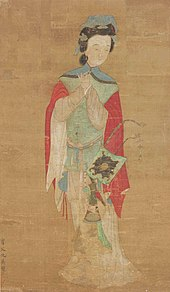

The Ballad of Mulan tells the story of a girl named Mulan who dresses as a man and joins the army, taking her father’s place because she has no elder brother to fulfil that role. After years of military campaign and service to her country, she returns with honour and gifts from the emperor.
Mulan is considered to be a hero because she has a potential for personal sacrifice, a noble purpose, and the willingness to accept the consequences of fighting for a purpose. She was willing to sacrifice her own life for her family by replacing her father in the military, and she was aware that she was risking her own life as well, and according to Philip Zimbardo and Zeno Franco's concept of heroism, heroism is an act of commitment to a noble purpose and willingness to accept the consequences of fighting for that purpose.